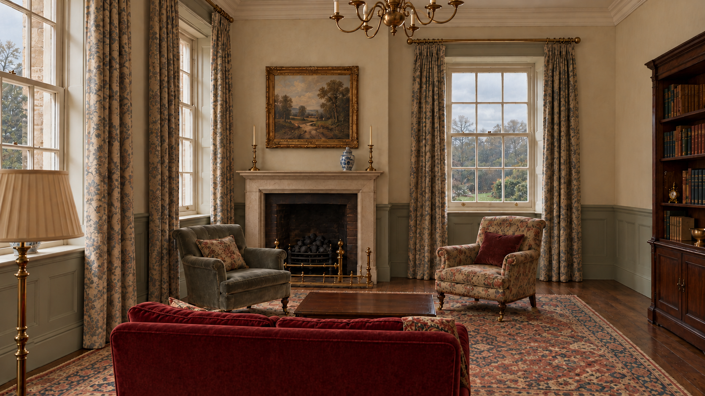
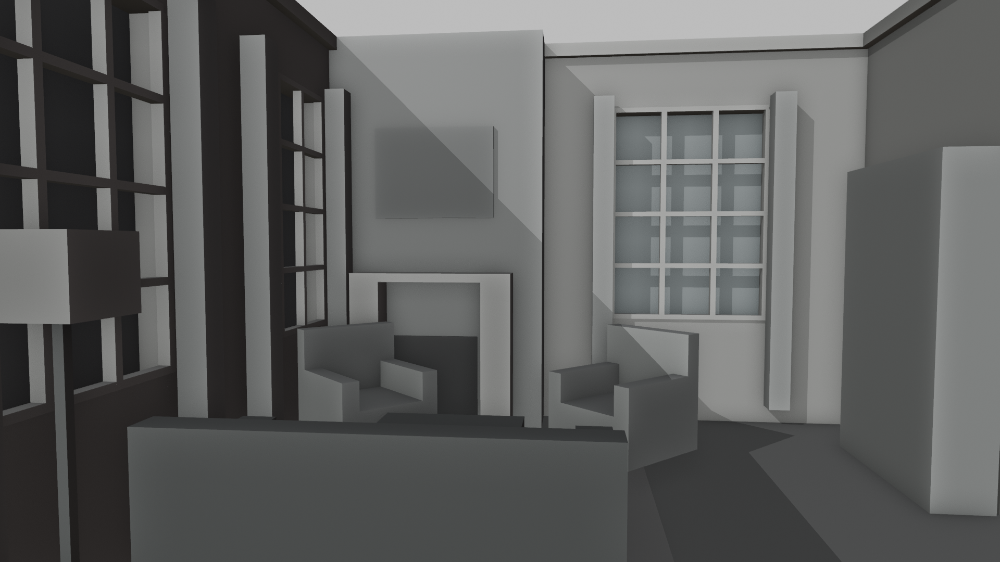
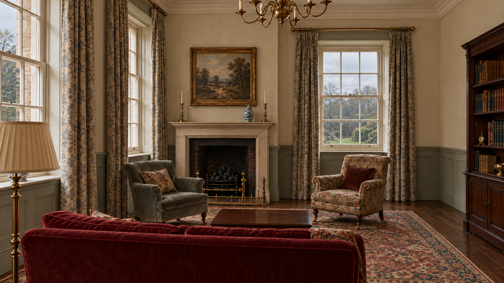

east / 东门看向壁炉 · r2候选
内置image工具，三轮定向修订。原生1672×941，近16:9；未放大。门窗/壁炉/沙发横向位置目视进入任务书容差，精确尺寸以平面为准。

当前地毯被画大，需收回平面范围；水粉笔触是否足够待评审。此图仍是比例与氛围草稿。
r2实际提示词 · 初始完整提示词 · 原图来源、尺寸与SHA-256
打开测量底图

独立Blender方块场景 / 1920×1080 / 74°水平视角。用于约束尺寸与遮挡，不是完成的3D模型。
打开r0 / r1迭代对照
r1：去掉杂物，沙发仍过宽
